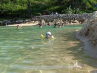
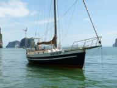
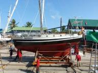
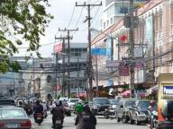

|


|
Voorbij Sri Lanka
» exacte locatie
 We zijn bijna tien etmalen op zee en alles loopt prima aan boord. De aanwezigheid van Erik maakt de tocht voor ons een heel stuk lichter. Erik houdt vooral overdag veel wacht buiten zodat wij alle tijd voor Siebe hebben. 's Nachts heeft ieder van ons een wacht van drieeneenhalf uur waardoor we meestal genoeg kunnen slaap kunnen krijgen.
We zijn bijna tien etmalen op zee en alles loopt prima aan boord. De aanwezigheid van Erik maakt de tocht voor ons een heel stuk lichter. Erik houdt vooral overdag veel wacht buiten zodat wij alle tijd voor Siebe hebben. 's Nachts heeft ieder van ons een wacht van drieeneenhalf uur waardoor we meestal genoeg kunnen slaap kunnen krijgen.
Qua weersomstandigheden hebben we tot nu toe al van alles gehad: geen wind, leuke wind, veel wind en in een onweersbui keiharde wind kracht acht. Dat laatste was bijzonder spectaculair. 's Nachts zonder maan of sterren in de stromende regen met de boot zwaar overhellend op het voordek de fok zo snel mogelijk naar beneden sleuren om schade te voorkomen. We hebben ook flinke jongens van golven gezien met een hoogte van drie tot vier meter. Niet gevaarlijk maar wel oncomfortabel. Een primeur in onze reis was een waterhoos die op enige afstand als een sliert uit een wolk naar beneden kroop tot het zeeoppervlak.
We hebben ook behoorlijk wat dieren gezien. In ieder geval vijf vissen aan de vislijn. Hiervan vielen er twee van de haak af. Twee andere trokken als een gek de hele vislijn van mijn molen, hingen nog een paar seconden aan het laatste knoopje waarna 'pang' mijn hele tuig weg was. Een vis, een tonijn, hebben we binnen kunnen halen en in twee dagen opgegeten. Daarnaast hebben we meerdere keren dolfijnen bij de boot gehad (Siebe herkende ze ook, 'vis vis'), vliegende vissen aan boord en gisteren ook walvissen met hun enorme fonteinen rondom ons. Ilse heeft ook nog een soort zwaardvis naast de boot zien zwemmen.
Siebe heeft zijn proces om te leren lopen even gepauzeerd aangezien er weinig mogelijkheden zijn aan boord en het soms ook echt teveel schommelt. In plaats daarvan is hij helemaal gek van boekjes lezen en leert hij steeds weer nieuwe woordjes erbij. Hij klimt dan iedere keer weer in de boekenkast, pakt een boekje, klimt weer naar beneden en kruipt dan bij een van ons op schoot om erin te gaan kijken.
De omstandigheden op het moment zijn heel rustig. We zeilen met de motor bij omdat het anders te langzaam gaat. Gisternacht hebben we Sri Lanka gerond, een mooie mijlpaal. Vanochtend kwamen er wat lokale vissersboten niuewsgierig een kijkje bij ons nemen. De verwachting is dat we zaterdag in India aankomen. We verheugen ons nu al op dat heerlijke Indiase eten!
|
|
|

Weer op zee
» exacte locatie
Een mooi verjaardagskado voor Joost, een goed weerbericht om te vertrekken uit Phuket. Maar eerst de boot vertrekklaar maken, dat duurt altijd langer dan je denkt. Alle extra jerrycans met diesel worden vastgezet en het bijbootje op het voordek vastgeknoopt terwijl ik ondertussen binnen opruim. We nodigen Noorderzon uit om kofie te komen drinken en ze brengen een heerlijke appeltaart mee voor Joost zijn verjaardag. Met slagroom! Al stond het pakje keurig in de koelkast, in de hitte krijg je de slagroom niet stijf geklopt. Maar dat drukt de pret niet, het smaakt net zo lekker over je taartje heen gegoten. Geen idee wanneer we weer koffie met Frank, Mirjam en Menno zullen drinken want zij blijven komend seizoen in Azie. We nemen afscheid en een paar uur later zijn we dan echt klaar en samen met opstapper Erik vertrekken we met een goed zeilbriesje. Helaas niet voor lang. De afgelopen dagen hebben we de motor veel aangehad maar op het moment zeilen we weer. Heerlijk stil als je de motor weer uit zet. Onze bestemming is Cochin in India, zo'n 1500 mijl verderop. Dus die wind kunnen we goed gebruiken. Siebe vermaakt zich goed. Klimt in de boekenkast, speelt in z'n floephoek en gister had hij een badje in de kuip. En als we even niet opletten graait hij de zeekaart van de kaarttafel en bekijkt 'm aandachtig.
|
|
|
Gelukkig 2010!
» exacte locatie
Oudejaarsdag. De zon is aan het ondergaan en we gaan nog even naar het
strand. Nu is het op z'n lekkerst, niet te heet meer. Voor Siebe wordt
het strand met de dag leuker. Hij speelt nu echt met de golven. Hij
kruipt het water in en laat zich overspoelen door de golven en
schatert van het lachen. Vindt hij een golf te hoog dan kruipt hij
gauw het water uit. Vandaag blijft het niet bij kruipen, hij gaat zelf
staan en loopt ineens zo'n vijf, zes stappen! Dat gaat makkelijker op
het harde zand dan op zo'n wiebelboot ;-). 's Avonds eten we op de
kant samen met nieuwe zeilvrienden die ook de Rode Zee door gaan. We
hebben geluk, Siebe slaapt in de buggy dus we hoeven vandaag niet na
elkaar te bestellen maar eten tegelijk. Rond een uur of elf staat de
muziek zo hard dat Siebe er wakker van wordt. Terug op de boot nemen
we het afgelopen jaar nog eens door. We zijn het er over eens dat we
het niet ons makkelijkste zeiljaar vonden. Het zeilen met Siebe was
nieuw en niet altijd makkelijk. We hebben niet zoveel nieuwe
zeilvrienden gevonden waardoor we ons soms wat eenzaam voelden. En het
piraten / boot verkoop-dilemma speelde 8 maanden in ons hoofd. Ondanks
dat hebben we genoten van Azie. De mensen zijn zo vriendelijk. Van
Kupang in Indonesie tot hier zijn ze dol op baby's. Van 'hello baby'
tot kiekeboespelletjes met de vakkenvuller. We denken aan komend jaar,
het jaar dat we gaan thuis komen! Ondertussen wordt om ons heen veel
vuurwerk afgestoken en langzaam vult de hemel zich met tientallen
lampionnen die opgelaten worden vanaf het strand. Een prachtgezicht.
We denken vaak aan hoe het straks zou zijn in Nederland. Om weer in
een huis te wonen en een vangnet van familie en vrienden om ons heen
te hebben. Zijn we snel gewend of verlangen we volgend oud en nieuw
terug naar ons strandje?
|
|
|
Knoop doorgehakt
» exacte locatie
Na meer dan acht maanden twijfelen is er nu een knoop doorgehakt. Er
gaat doorgevaren worden. Het grote probleem bij het maken van de
beslissing is steeds geweest dat we Siebe aan boord hebben. Hij is
klein en kwetsbaar en heeft bovendien geen inspraak in de hele zaak.
Daarom gaan we altijd erg voorzichtig met hem om en de tocht naar de
Rode Zee zat ons om die reden steeds niet lekker. Zonder Siebe was al
dat getwijfel er zeker niet geweest. We hebben gevaarlijkere dingen
gedaan op deze reis.
Nu heeft zich iets heel onwaarschijnlijks voorgedaan. Ilse's oom Erik,
die net vier dagen met ons heeft meegevaren, heeft aangeboden om mee
te gaan als opstapper zodat Ilse en Siebe tijdelijk van boord kunnen.
Voor ons is dat de uitweg uit het hele dilemma. We gaan dus gebruik
maken van dit aanbod. Het plan is nu om met ons vieren van Thailand
naar India te varen. Daar gaan Siebe en Ilse van boord en met het
vliegtuig terug naar Nederland. Ik vaar met Erik door naar de Rode
Zee, waar Siebe en Ilse weer aan boord komen en Erik terugvliegt naar
Nederland. Wij varen vervolgens door de Middellandse Zee en Frankrijk
terug naar huis. Het ziet er dus naar uit dat we deze wereldreis
daadwerkelijk gaan afronden.
Uiteraard ga ik met Erik de meest veilige route varen. Dat betekent
vanaf India met een hele grote boog naar Oman om zover mogelijk bij
Somalie uit de buurt te blijven. Na Oman begint de Golf van Aden, een
gebied waar veel piratenactiviteit is. Voor dat traject ben ik nog
steeds bezig met het samenstellen van een groot convooi. Traditioneel
gaan boten in groepjes van vier of vijf, maar het is de bedoeling dat
dit convooi bestaat uit minimaal twintig boten waardoor extra
bescherming van de kustwacht in Yemen verkregen kan worden. Ik heb het
het 'superconvooi' genoemd en het lijkt erop dat er genoeg interesse
is. Deze week ga ik beginnen met het aannemen van de aanbetalingen om
het geheel meer stevigheid te geven.
De geplande vertrekdatum uit Thailand is 8 januari. Tot die tijd gaan
we de boot klaarmaken voor vertrek. Er liggen een paar
onderhoudsklusjes, maar dat is geen nieuws meer. Maar we kunnen het
rustig aan doen en gaan met Siebe elke dag naar het strand hier. Dat
vindt hij helemaal geweldig. We doen zijn zwembandjes om en weg is ie.
Hij speelt in het zand, in het water of zwemt een stukje rond. Hij
vermaakt zich helemaal zelf. Hij is ook totaal gefascineerd door
vissen. Hij herkent ze in de visvijver van het restaurant, in de zee,
in boekjes en dood gekoeld in ijs en roept dan 'vis vis vis'.

|
|
|
Bootwerk
» exacte locatie
We zetten nu pas weer iets op de site, want we zijn de laatste twee
weken erg druk geweest. Dat komt vooral omdat we nog steeds twee
plannen in de lucht aan het houden zijn. Het doorvaar-plan en het
verkoop-plan. Voor het doorvaar-plan moesten we eigenlijk het water
uit om het onderwaterschip van nieuwe antifouling te voorzien. Er
kwamen teveel schelpen op de romp waardoor je afgeremd wordt. Voor het
verkoop-plan moesten we ook het water uit om de hele boot weer eens
goed in de verf te zetten. Hoe dan ook, dat we het water uit moesten
was dus duidelijk. We hebben een goedkoop maar goed hotel geboekt vlak
bij de werf om te overnachten en om een veilige en schone plek te
hebben voor Siebe. Negen lange dagen werk en de boot was weer helemaal
in topconditie, zowel onder- als bovenwater. Daarna kwam Ilse's oom
Erik die in Thailand woont op bezoek om vier dagen met ons mee te
varen. Dat was erg gezellig en we konden zijn hulp goed gebruiken bij
het maken van de verkoopfoto's van de boot. Tegelijkertijd vraagt het
doorvaar-plan ook aandacht. Ik ben namelijk bezig een heel groot
convooi van jachten te organiseren onder leiding van een ervaren
convooileider. Onderdeel daarvan is ook dat de kustwacht in Jemen op
de hoogte wordt gebracht en ze ons nauwlettend in de gaten gaan
houden. Terug naar het verkoop-plan. We moeten nog interieurfoto's
maken en daarvoor moeten we alle netten die we voor Siebe hebben
opgehangen tijdelijk weghalen. En er moet nog een mooie tekst worden
opgesteld. We hopen morgen de advertentie te kunnen gaan plaatsen.
Overigens, als we wel doorvaren dan hebben we ook nog een nieuw
grootzeil en marifoonantenne nodig en dat kost ook weer even tijd. Dit
is een warrig verhaal aan het worden en precies zo voelt het ook aan
in onze hoofden. Ondertussen tikt de tijd door en als we willen
doorvaren moeten we toch uiterlijk 1 januari met de voorbereidingen
beginnen. Als we besluiten niet door te varen dan zitten we hier vast
en moeten we blijven rondhangen tot de boot verkocht is. We kunnen de
boot ook achterlaten, terugvliegen en maar zien wat we er ooit voor
ontvangen via een makelaar. Pijnlijk, vooral nu ie er zo mooi uitziet.
De kans is klein dat er de komende twee weken een koper op onze
advertentie komt, want volgens de makelaar is de gemiddelde
verkooptijd hier zes maanden. Moeilijk moeilijk moeilijk.




|
|
|
Siebe is jarig!
» exacte locatie
Vandaag is een erg bijzondere dag voor ons, want precies een jaar
geleden is Siebe geboren. Voor deze gelegenheid liggen we bij het
eiland Phi Phi Lee. Voor degene die het iets zegt, hier is de film
'The Beach' opgenomen. Het is een prachtige baai omgeven door hoge
steile rotsen. Aan het eind van de baai ligt een fantastisch mooi
strand. Siebe wordt zoals gebruikelijk een half uurtje voordat het
licht wordt wakker. We gaan samen met hem in zijn 'floephoek' zitten,
de afgeschermde ruimte ter grootte van een tweepersoonsbed waar hij
veilig kan spelen en slapen. Na 'lang zal hij leven' krijgt hij een
eerste kadootje. Hij gaat er direct mee spelen. Als hij een beetje
uitgespeeld is kleden we hem aan, trekken zijn zwemvest aan en gaan we
meteen naar het strand. Er is nu nog schaduw. We ontbijten met ons
drietjes op het strand en genieten van het fraaie uitzicht. Terwijl
wij de koffie inschenken begint Siebe het strand te verkennen. Heuvels
in het zand vindt hij prachtig. Hij kruipt ook zo naar de golven toe.
Steeds iets verder, maar als er dan een wat grotere golf komt keert
hij snel weer om. Tegen de tijd dat we terug gaan naar de boot begint
het net drukker te worden in de baai. Deze plek is namelijk een enorme
toeristische attractie. Dat betekent speedboten die van alle kanten de
baai in komen scheuren, rondvaartboten die alles via de speakers nog
eens goed toelichten en tientallen longtails met hun knallende tot
buitenboordmotor omgebouwde automotoren. Binnen de kortste keren staat
het strand vol mensen, maar wij hebben ons moment al gehad. Het is
tijd voor Siebe's ochtendslaapje. Als hij wakker wordt staat er een
groot stuk cake met slagroom en een een-jaar-kaarsje te wachten op
hem. We hebben geprobeerd hem het kaarsje te laten uitblazen ("Siebe,
wat doet een walvis?" , maar hij blaast nog niet hard genoeg en ook
niet in de goede richting. Daarna mocht hij het gaan opeten. Gedurende
de rest van de dag hebben we hem de andere kadootjes gegeven van
onszelf en familie en hij heeft vrolijk gespeeld. 's Middags zijn we
nog een uurtje bij een buurboot op bezoek geweest. Zo was er tenminste
nog een beetje het idee van visite. Daarna was het bijna donker en
tijd voor bad. Siebe weet tegenwoordig wat de maan is. Hij herkent het
in boekjes en ook in het echt. En zo zat hij daar buiten in zijn badje
naar boven te kijken en heel zachtjes 'maan maan' te zeggen. Het is zo
mooi zo'n klein kindje. Toen hij sliep hebben we samen nog eens de
foto's van een jaar geleden bekeken. Wat is er een hoop gebeurd en wat
is de tijd snel gegaan. , maar hij blaast nog niet hard genoeg en ook
niet in de goede richting. Daarna mocht hij het gaan opeten. Gedurende
de rest van de dag hebben we hem de andere kadootjes gegeven van
onszelf en familie en hij heeft vrolijk gespeeld. 's Middags zijn we
nog een uurtje bij een buurboot op bezoek geweest. Zo was er tenminste
nog een beetje het idee van visite. Daarna was het bijna donker en
tijd voor bad. Siebe weet tegenwoordig wat de maan is. Hij herkent het
in boekjes en ook in het echt. En zo zat hij daar buiten in zijn badje
naar boven te kijken en heel zachtjes 'maan maan' te zeggen. Het is zo
mooi zo'n klein kindje. Toen hij sliep hebben we samen nog eens de
foto's van een jaar geleden bekeken. Wat is er een hoop gebeurd en wat
is de tijd snel gegaan.
|
|
|
Hong
» exacte locatie
Van Langkawi is het 120 mijl naar Phuket. Dat kun je in een nachttocht
doen maar langs de kust van Thailand liggen aardig wat eilandjes zodat
je ook in dagtochten naar Phuket kan hoppen. De eerste dagtocht vanuit
Langkawi is slechts 15 mijl en dan zijn we eigenlijk al in Thailand.
Nog niet officieel. Ons visum hebben we al geregeld maar in Phuket
kunnen we pas inklaren. En ze vinden het daar schijnbaar niet erg als
je een week doet over die 120 mijl. We vinden dit een erg mooi
zeilgebied met aparte vormen steile eilandjes van limestone die uit
zee steken. Limestone is een wat zachter gesteente waardoor de
corrosie door zee en wind sneller gaat en er makkelijker stukken
afbreken. Hierdoor ontstaan veel inhammen en grotten. Soms ontstaat er
een hong. Dit is een grot die vanaf zee leidt naar een ruimte omgeven
door steile rotswanden die naar boven open is. De enige uitweg is de
grot. Er zijn er meerdere te vinden te zijn in dit gebied maar wij
gaan de hong op Koh Muk bekijken. Erg hoog is deze grot niet dus we
besluiten met laag water met de bijboot er in te varen. Moeilijk te
zien waar je er nou in moet! We horen dat het bij het touwtje is maar
dan nog twijfelen we of dat een goed idee is. Er staat ook wat deining
dat lawaaierig om ons heen klotst. Lampje aan en ja, we gaan er in!
Donker maar Siebe vindt het wel mooi met ons lampje. Na een stukje
roeien zien we het licht aan de andere kant. Ver is het niet. En daar
is een prachtig strandje. Omhoog kijkend inderdaad geen uitweg, wat
een bijzondere plek! Weer terug op de boot maken we ons snel klaar om
te vertrekken. Het weerbericht geeft wind uit het noordwesten, de
richting waar we heen willen, voor de volgende dag. Al motorzeilend
leggen we 37 mijl af en komen in het net niet donker aan op Phi Phi
Don.
|
|
|

|

|
|
|